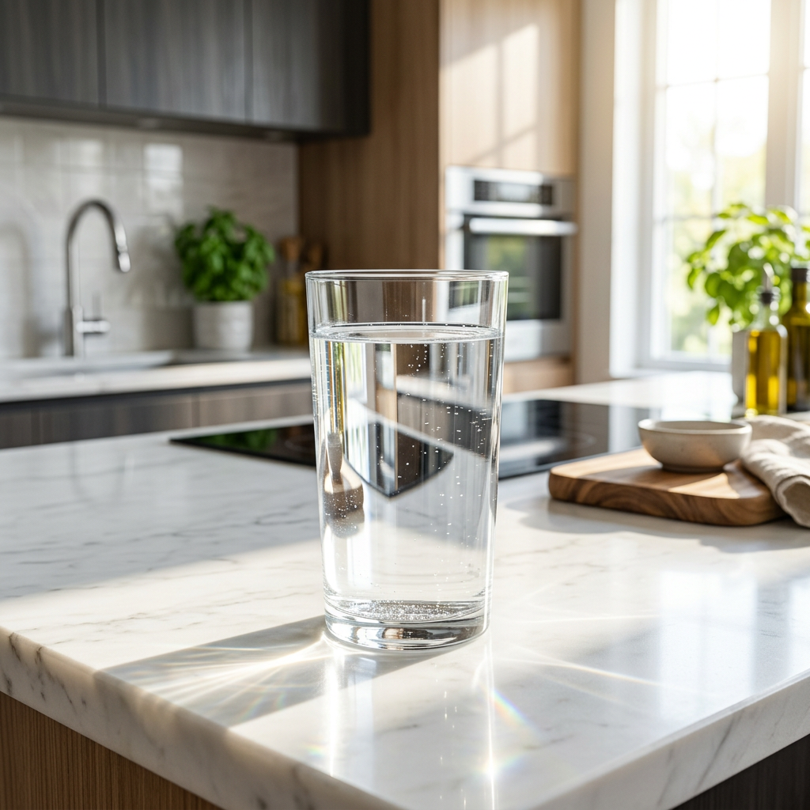
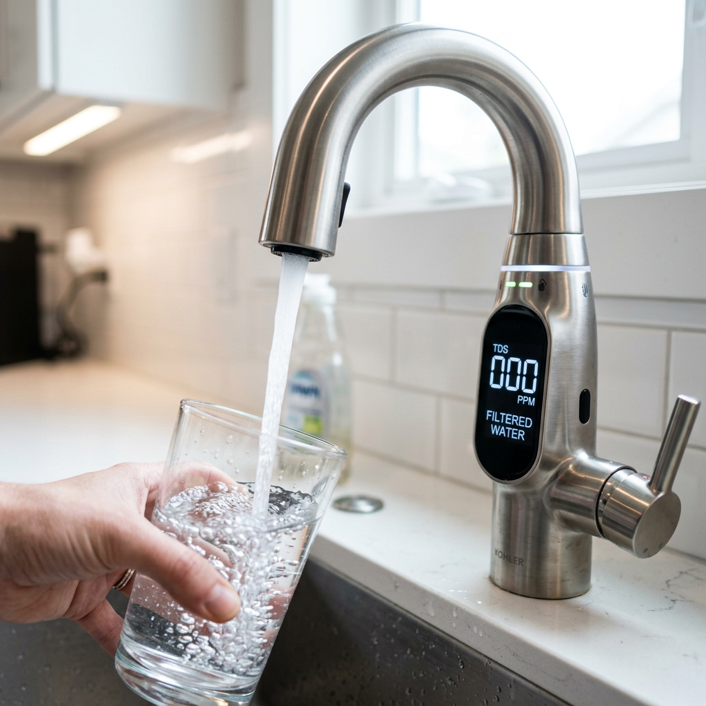

Best Water Filter for Metallic Taste: Stop Drinking 'Penny Water' and Protect Your Health
Best Water Filter for Metallic Taste: Stop Drinking 'Penny Water' and Protect Your Health
That sharp, 'bloody,' or penny-like taste in your mouth after a sip of tap water isn't just unpleasant—it's a warning sign. Whether it is iron, manganese, or zinc leaching from aging pipes, or more dangerous contaminants like lead, your water should not taste like a hardware store. For high-intent homeowners, the 'metallic taste' isn't just a nuisance; it is a signal that your filtration system is failing you.
To solve this, you need more than a simple pitcher filter. You need a Reverse Osmosis (RO) system capable of stripping out dissolved solids at the molecular level. Below, we have compared the two industry leaders in rapid-flow, tankless RO technology to help you reclaim your water's purity.

| Product Name | Flow Rate | Filtration Stages | Best For | Verdict |
|---|---|---|---|---|
| Waterdrop G3P800 | 800 GPD | 9-Stage | Large Families & Heavy Use | The Ultimate Powerhouse |
| Waterdrop G2P600 | 600 GPD | 7-Stage | Apartments & Small Households | The Efficient Value Choice |
The Problem: Why Does Your Water Taste Like Metal?
The metallic tang usually stems from high concentrations of Total Dissolved Solids (TDS). This includes iron, which stains your sinks; manganese, which leaves a bitter aftertaste; and zinc. Worse, it could be lead—a colorless, odorless neurotoxin. Standard carbon filters often struggle with these dissolved minerals. Reverse Osmosis is the gold standard because it uses a semi-permeable membrane to force water through at high pressure, leaving the metals behind.
1. Waterdrop G3P800: The Professional Grade Solution
If you want the absolute best defense against metallic water, the Waterdrop G3P800 is the undisputed champion. It doesn't just filter water; it restores it to a pristine state using a massive 9-stage filtration process.
- 800 GPD High Flow: Fills a cup in just 6 seconds. No more waiting around for a slow trickle.
- 9-Stage Filtration: Specifically designed to target heavy metals, PFAS, fluoride, and 1,000+ other contaminants.
- Smart Faucet: Features a real-time TDS monitor so you can actually see the metallic particles being removed before you drink.
- 1:3 Pure-to-Drain Ratio: The most efficient system on the market, saving you money on your water bill.
This system is for the user who refuses to compromise on quality and wants the highest flow rate available in a tankless design.
Check Price on Official Store
2. Waterdrop G2P600: The Compact Efficiency King
For those with limited under-sink space or smaller households, the Waterdrop G2P600 offers incredible performance without the premium footprint. It is a significant upgrade from entry-level RO systems, providing 600 GPD of fresh water.
- 7-Stage Filtration: Effectively neutralizes metallic tastes by removing lead, mercury, and arsenic.
- Tankless Design: Saves 70% more space than traditional RO systems, preventing secondary contamination from stagnant tank water.
- 2-Year Filter Life: The RO membrane is built to last, reducing maintenance costs and hassle.
- Easy Installation: Most users have this system running in under 30 minutes.
The G2P600 is the perfect balance of price and performance, ensuring your coffee and tea finally taste the way they were meant to.
Check Price on Official StoreFinal Verdict: Which Filter Should You Choose?
The choice comes down to your household's demand. If you have a large family or cook frequently with filtered water, the Waterdrop G3P800 is the superior investment. Its 9-stage filtration and 800 GPD flow rate ensure you never run out of ultra-pure water.
However, if you are looking for a compact, highly effective solution for a smaller kitchen or apartment, the Waterdrop G2P600 provides exceptional filtration that will eliminate that metallic taste once and for all at a more accessible price point.
Stop settling for water that tastes like it came from a rusty pipe. Upgrade to a Waterdrop RO system today and taste the difference of true purity.